Hard evidence.Every domain.
Independent test & validation platform for robots, drones and autonomous vehicles.
The hard part of shipping autonomous machines is no longer building them. It’s proving they’re ready.
Proof means hard evidence: how a machine behaves, how it stacks up against the alternatives, and where it performs best. Robots and autonomous vehicles now change at the pace of software releases, yet most are still validated on the slow calendar of physical hardware. Closing that gap is how operators get better, safer machines into the field sooner.
Software ships weekly. Validation happens a few times a year.
Autonomous fleets push updates all the time, yet validation still hinges on occasional field trials. A trial from last quarter says little about which build is safest now. Each new release quietly expires the last result.
Real-world conditions change just as fast.
Weather, traffic, terrain and edge cases never stand still. When trials don’t reflect the conditions machines will actually meet, teams ship capability that was never truly tested.
Tessarc helps teams validate machines at the pace and scale of modern software.
Tessarc builds Proving Lab technology
The Proving Lab is a live test environment that measures performance in realistic conditions, so teams learn how machines behave before they ship
Environment
A physical space that recreates the real world. The Proving Lab reproduces real operating conditions as faithfully as possible, then reconfigures fast to test new variations.
Measurement
Every movement, recorded and time-synced. The Proving Lab instruments the whole test space and merges every data feed into one record that can be scored against shared standards.
Learning
Insights that stack up. Here the data is filtered and combined to answer real questions. AI assistants surface the patterns that matter, like how a new release affects results or which behaviours lead to success, and replay what-if scenarios. Unlike one-off field trials, every new experiment makes the next answer sharper.
Neutral by design.
Tessarc sits at the centre of your testing as an open, modular foundation. Connect the machines, sensors and tools you already rely on, from any vendor, and shape your workflows around them. We build the platform that evaluates machines, never the machines themselves, so we never pick a winner.
Open
Any system, sensor or application can plug in.
Modular
Start with one layer and add the rest as you grow.
Objective
Every vendor gets the same environment, measures and ground truth.
Built by engineers and operators from

Backed by
Build the Proving Lab.
Help us build the technology we deploy to Proving Labs around the world, giving our partners evidence they can trust.